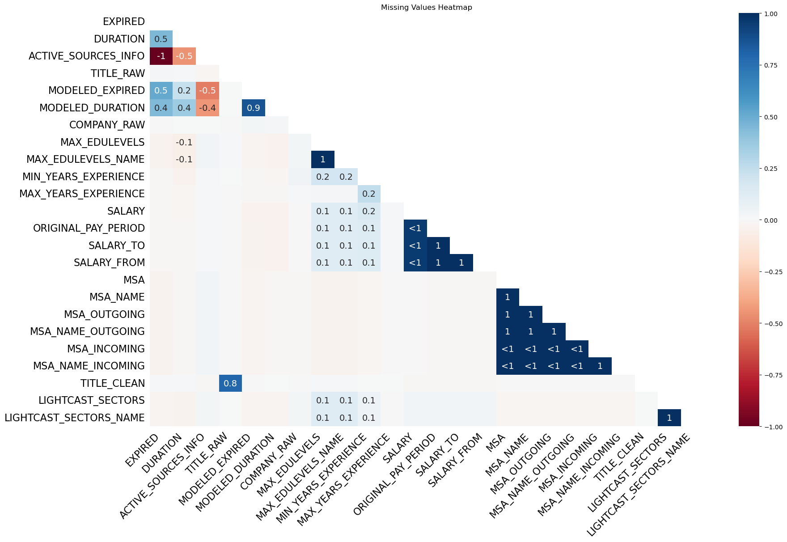

Code
import pandas as pd
import matplotlib.pyplot as plt
import missingno as msno
import matplotlib.pyplot as plt
import seaborn as snsComprehensive Data Cleaning & Exploratory Analysis of Workforce Disparities
Team 8
Jianhao Hong
Boston University
Xinran Li
Boston University
Chialing Sung
Boston University
Zimo Zeng
Boston University
In this study, we conduct an in-depth analysis of workforce disparities, focusing on gender, wages, and labor market trends. Our analysis is based on real-world job postings data from Lightcast Job Postings(Lightcast (2024)). To ensure a clean and reliable dataset, we first perform extensive data preprocessing, removing redundant classification codes and tracking columns. We then handle missing values and visualize their distribution using a heatmap, ensuring our dataset maintains integrity and completeness. Lastly, through various exploratory visualizations, we extract meaningful insights about industry job demand, salary distributions, and remote work trends. Our goal is to highlight key patterns that inform labor market dynamics and workforce disparities.
In our job market analysis, certain columns in the dataset do not provide meaningful insights and should be removed. These columns may contain tracking data, duplicate information, or outdated classification codes. By removing them, we ensure our analysis is focused, relevant, and efficient.
Unique Identifiers & Tracking Data - ID: A unique identifier that does not add value to job market trends analysis. - URL, ACTIVE_URLS: Job posting URLs that do not contribute to labor market insights. - DUPLICATES: A tracking column that flags duplicate records. Instead, we will remove duplicates programmatically. - LAST_UPDATED_TIMESTAMP: Tracks data updates but does not impact our analysis.
Redundant NAICS (Industry) and SOC (Occupation) Codes - NAICS2, NAICS3, NAICS4, NAICS5, NAICS6: Represent different levels of industry classification. We retain only NAICS_2022_6 to avoid redundancy. - SOC_2, SOC_3, SOC_5: Represent different levels of job classification. We retain SOC_2021_4 for consistency.
✅ Ensures Data Consistency - Using multiple versions of NAICS/SOC codes could result in classification mismatches. - Retaining only the latest versions ensures alignment with the most recent industry and occupation standards.
✅ Reduces Redundancy - Storing multiple levels of classification increases data complexity without adding value. - Keeping only NAICS_2022_6 and SOC_2021_4 simplifies the dataset.
✅ Improves Analytical Accuracy - Prevents double counting due to overlapping classification levels. - Streamlines job market segmentation, making it easier to draw insights.
🔹 Increases Processing Efficiency - Optimized Memory Usage: A smaller dataset reduces memory consumption, making data operations faster and more efficient. - Faster Data Processing: Removing unnecessary columns reduces computational overhead, enabling quicker transformations, queries, and aggregations. - Accelerated Data Visualization: A streamlined dataset ensures that visualizations load and render quickly.
🔹 Enhances Data Consistency - Eliminates Conflicting Information: Multiple versions of industry and occupation classification codes (e.g., NAICS and SOC) can create inconsistencies in analysis. - Aligns with Current Standards: Retaining only NAICS_2022_6 and SOC_2021_4 ensures relevance and accuracy. - Facilitates Comparability: Standardized codes enable accurate cross-sector and job role comparisons.
🔹 Improves Visualization Clarity - Reduces Clutter in Charts and Graphs: Too many redundant columns can overload visualizations, making them harder to interpret. - Simplifies Data Interpretation: By keeping only essential classification codes, we highlight key trends without unnecessary complexity. - Facilitates Trend Analysis: A well-structured dataset allows for clear insights into industry demand, salary distribution, and workforce trends.
Ensuring data integrity and accuracy is crucial for reliable analysis. We employ the following strategies to handle missing values:
